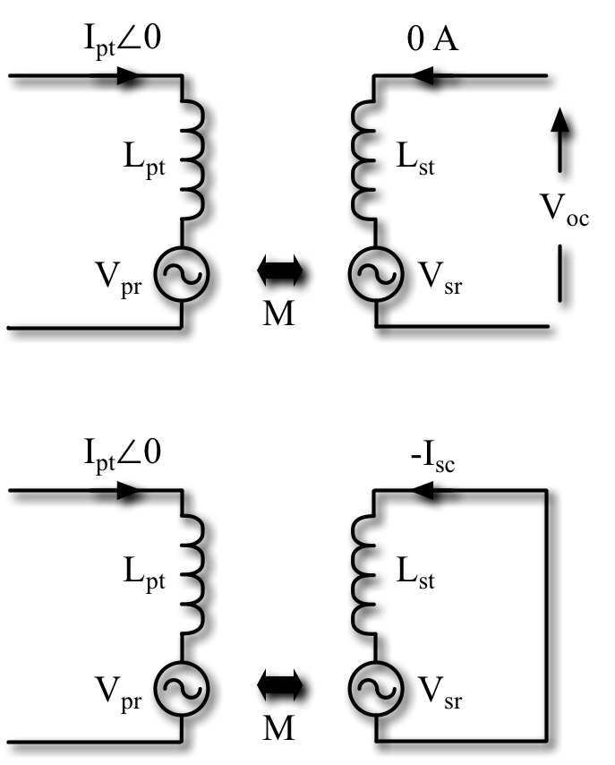
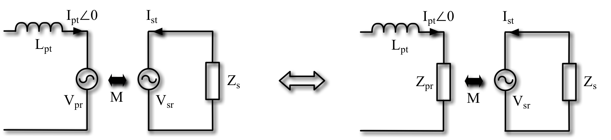
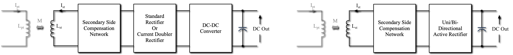

class: title-slide count: false .logo-title[] # Near Field IPT ### History and the Fundamentals .TitleAuthor[Duleepa J Thrimawithana & Grant A Covic] --- layout: true name: template_slide .logo-slide[] .footer[[D J Thrimawithana](https://www.linkedin.com/in/duleepajt) & [G A Covic](https://www.linkedin.com/in/grant-covic-179546a/), IEEE Wireless Week, Wireless Power Transfer School (June 2021)] --- # The University of Auckland - Highest ranked New Zealand university and 85th in the QS World University Ranking - Over 5,000 staff members and 40,000 students - Nine faculties including Medical & Health Sciences, Engineering, Business & Economics and Science .center[<img src="img/UoAMap.png" height="300">] --- # Dept. of Electrical, Computer & Software Eng. .left-column[ - One of the 5 departments in the Faculty of Engineering - Offers 3 undergraduate degree programs - Electrical & Electronics, Computer Systems and Software - Project based teaching - 35+ full-time academic staff members and 15+ post-doctoral research fellows - 150+ postgraduate students and 700+ undergraduate students - Regular visiting research scholars and research students - Research groups include Power Electronics, Power Systems, Signal Processing, Robotics, Embedded Systems, Parallel Computing, Telecommunications and Control Systems ] .right-column[ <img src="img/UoAEng.png" width="300px"> ] --- # Dept. of Electrical, Computer & Software Eng. .center[<img src="img/EngBuild.png" height="400">] --- # Power Electronics Research Group .center[<img src="img/PEGROUP.gif" height="430">] --- class: title-slide layout: false count: false .logo-title[] # Part I - Wireless Power Transfer ### A Review of Current Status --- layout: true name: template_slide .logo-slide[] .footer[[D J Thrimawithana](https://www.linkedin.com/in/duleepajt) & [G A Covic](https://www.linkedin.com/in/grant-covic-179546a/), IEEE Wireless Week, Wireless Power Transfer School (June 2021)] --- name: S1 # Wireless Power Transfer .left-column[ - Can be divided in to two broad categories - Radiative transmission through far-field principles - Examples include power transfer through radio-frequency, microwave, optical and ultrasonic technologies - At an experimental stage of development - AirFuel Alliance is developing standards - Non-radiative transmission through near-field principles - Resonant inductive power transfer (IPT) and capacitive power transfer (CPT) technologies are utilised - IPT, also referred to as highly resonant wireless power transfer or magnetic resonance coupling, is the most mature technology - WPC, SAE, etc. standards are being developed ] .right-column[ .center[<img src="img/intro/longdist.png" height="380px">] ] --- # Early Developments - 1890s to 1920s: Tesla (US), Hutin (FR) and LeBlanc (FR) demonstrated wireless power transfer - 1960s: Shuder (US) and his team worked on high power IPT systems for biomedical applications - 1970s: Otto (NZ) and Bolger (US) proposed roadway power - 1980s: Santa Barbara electric bus project (US) - Early 1990s: Boys (NZ), Green (NZ) and Covic (NZ) developed IPT systems for dynamic industrial systems & stationary people movers which were adopted and commercialized by Difuku and Wamplfer in materials handling applications - Late 1990s: Meins (DE) developed multiphase IPT systems for industrial applications .center[<img src="img/History.png" height="150px">] --- # Recent Developments - Early 2000s: Boys (NZ) and Covic (NZ) developed IPT systems with Conductix-Wamplfer and Daifuku for automated guided vehicles and busses - Mid 2000s: Hui (HK), Hu (NZ) and Soljacic (US) developed low power IPT systems for powering/charging biomedical implants, sensors and consumer devices - Late 2000s: Hu's (NZ) work lead to forming Power by Proxi, Soljacic's (US) work lead to forming WiTricity - Early 2010s: Boys's (NZ) and Covic's (NZ) work lead to forming HaloIPT, which lead to Qualcomm Halo and Qi standard was released - Late 2010s: WiTricity holds the largest patent portfolio as they acquired Qualcomm Halo, while Apple acquires Power by Proxi, and number of new research groups as well as companies starts to emerge - Early 2020s: Standards for EV stationary charging completed .center[] --- name: S5 # Current Status of IPT - Power ratings of tens of kWs with uni or bi-directional power flow - Magnetic designs include circular coil, solenoidal coil, polarised coil, multi coil structures as well as track based systems - Ferrites and/or reflection coils are often used to shape the magnetic fields generated - Transmission range of over 300 mm with over ± 200 mm XY tolerance easily achievable - Efficiency typically over 85% but can be as high as 97% - Operating frequency typically ranges from tens of kHz to tens of MHz .center[<img src="img/fund/LongDistance.jpg" height="200px">] --- name: S6 # IPT Applications - Factory automation and materials handling - Includes hoists, AGVs and clean room systems - Consumer electronics and appliances - Charging phones, laptops, etc. as well as powering appliances - Transportation electrification - Charging stationary and in-motion electric vehicles, charging electric ferries, etc. - Biomedical - Charging and powering medical devices as well as implants - Lighting - Wireless power and communication to tunnel lighting, stage lighting and mines - Industrial applications - Industrial machinery, robots, electric fense energizers, etc. --- class: title-slide layout: false count: false .logo-title[] # Part II - IPT Fundamentals ### Modelling the Coils and Power Transfer --- layout: true name: template_slide .logo-slide[] .footer[[D J Thrimawithana](https://www.linkedin.com/in/duleepajt) & [G A Covic](https://www.linkedin.com/in/grant-covic-179546a/), IEEE Wireless Week, Wireless Power Transfer School (June 2021)] --- name: S7 # Components of an IPT System .center[<img src="img/fund/IPTConcSys.png" height="150px">] - Primary consists of a DC-AC switched-mode converter, a compensation network and a transmitter coil(s) - A lumped transmitter coil is often referred to as a primary pad/coil/coupler - An elongated coil is often called a primary track - Can be directly fed by a DC source or through a grid-connected AC-DC converter - Secondary/secondary consists of a receiver coil(s), a compensation network and an AC-DC converter - The reciever coil is is often referred to as a secondary/secondary pad/coil/coupler - Primary and secondary coils are magnetically coupled but coupling coefficient is typically 40% or lower - The compensation networks help improve efficiency by minimizing the VA requirements of converters --- name: S8 # Modelling the Primary and Secondary Coils .center[<img src="img/fund/TxEq.png" height="140px">] - The behaviour of the coils can be modelled using a T-equivelent transformer model - `\(L_{pt}\)` and `\(L_{st}\)` are the self-inductances of primary and secondary coils, respectively - `\(\phi_{m}\)` represents flux linkage while `\(\phi_{lk_p}\)` and `\(\phi_{lk_s}\)` represent leakage flux - The coupling coefficient, k, between the coils is less than 0.4 in a typical IPT system - The mutual inductance, M, between the two coils is given by \\[M = k\sqrt{L\_{pt}L\_{st}}\\] - If the mean-turn lengths of the coils do not change, then `\(n = \frac{N_{pt}}{N_{st}} = \sqrt{\frac{L_{pt}}{L_{st}}}\)`, where `\(n\)` is the turns ratio --- name: S9 # Coupled Inductor Model .center[<img src="img/fund/CpldL.png" height="135px">] - Although a T equivalent transformer model can be used to model the coils, the coupled inductor model is widely used when analysing an IPT system in the phasor-domain - In the coupled inductor model, `\(L_{pt}\)` and `\(L_{st}\)` represent the self-inductances of primary and secondary coils - `\(V_{sr}\)` represents voltage induced across `\(L_{st}\)` due to current `\(I_{pt}\angle 0\)` flowing through `\(L_{pt}\)` and is given by \\[V\_{sr} = \omega MI\_{pt}e^{j\pi/2}\\] - Similarly, `\(V_{pr}\)` represents voltage induced across `\(L_{pt}\)` due to `\(I_{st}\angle\theta\)` and is given by \\[V\_{pr} = \omega MI\_{st}e^{j(\theta+\pi/2)}\\] ??? If the current through primary coil is `\(I_{pt} \sin (\omega t)\)` then, \\[\phi\_{m} \propto I\_{pt} \sin (\omega t) \\] The voltage induced on the secondary coil is therefore, \\[v\_{sr} \propto \frac{\mathrm{d} \phi\_{m} }{\mathrm{d} t} \\] \\[v\_{sr} \propto \omega I\_{pt} \cos (\omega t) \\] Since `\(M\)` represent the coupling between the two coils, \\[v\_{sr} = \omega M I\_{pt} \cos (\omega t) \\] In the phasor-domain, \\[V\_{sr} = \omega M I\_{pt} e^{j\pi/2} \\] --- name: S10 # Open-Circuit Voltage & Short-Circuit Current .left-column[ - The voltage measured across an open-circuited secondary coil, `\(V_{oc}\)`, is the same as `\(V_{sr}\)` and therefore \\[V\_{oc} = V\_{sr} = \omega MI\_{pt}e^{j\pi/2}\\] - The current flowing through a short-circuited secondary coil, `\(I_{sc}\)`, is \\[I\_{sc} = \frac{V\_{sr}}{j\omega L\_{st}} = I\_{pt}\frac{M}{L\_{st}}\\] - The uncompensated volt-ampere (VA) capacity of the secondary coil can be given by \\[S\_{u} = \left | V\_{oc} \right | \left | I\_{sc} \right | = I\_{pt}^2\frac{\omega M^2}{L\_{st}}\\] ] .right-column[.right[  ]] --- name: S11 # Power Transferred Across Airgap .left-column[ - Assume that the `\(V_{sr}\)` induced by `\(I_{pt}\angle 0\)` causes a current `\(I_{st}\angle\theta\)` to flow through a load, `\(Z_{sc}\)`, attached across the secondary coil - Under these conditions, power transferred is \\[P\_{o} = \Re \left \\{ V\_{sr}I\_{st}e^{-j(\theta)} \right \\} = \left | V\_{sr} \right | \left | I\_{st} \right | \cos(\pi/2-\theta)\\] - The VA rating of the coils required to achieve this is \\[\mathit{VA}\_{pt} = \omega L\_{pt} \left | I\_{pt} \right |^2 \quad \text{and} \quad \mathit{VA}\_{st} = \omega L\_{st} \left | I\_{st} \right |^2 \\] - Thus `\(P_{o}\)` is related to the VA in the coils as given by \\[P\_{o} = k \sqrt{\mathit{VA}\_{pt}\mathit{VA}\_{st}} \sin(\theta) \\] - Typically, `\(\sin(\theta) \approx 1\)`, and thus `\( P_o \approx k \sqrt{\mathit{VA}_{pt}\mathit{VA}_{st}} \)` ] .right-column[.right[ <img src="img/fund/GenP.png" width="310px"> ]] ??? Note that \\[P\_{o} = \Re \left \\{ V\_{sr} \bar {I\_{st}} \right \\} \\] Substituting `\( \left| V_{sr} \right | = \omega M \left| I_{pt} \right | \)`, \\[P\_{o} = \omega M \left | I\_{pt} \right | \left | I\_{st} \right | \cos(\pi/2-\theta)\\] \\[P\_{o} = k\sqrt{ (\omega L\_{pt} \left | I\_{pt} \right |^2 ) (\omega L\_{st} \left | I\_{st} \right |^2) } \sin(\theta)\\] \\[P\_{o} = k \sqrt{\mathit{VA}\_{pt}\mathit{VA}\_{st}} \sin(\theta) \\] --- name: S12 # Coil Q, Losses & Maximum Efficiency - Assume that the losses in `\(L_{pt}\)` and `\(L_{st}\)` are modelled using equivelent series resistances (ESRs) `\(r_{pt}\)` and `\(r_{st}\)` - The quality factors, `\(Q_{pt}\)` and `\(Q_{st}\)`, of the primary and secondary coils are \\[Q\_{pt} = {\omega L\_{pt}}/{r\_{pt}} \quad \text{and} \quad Q\_{st} = {\omega L\_{st}} / {r\_{st}} \\] - The total losses in the two coils can be expressed as \\[P\_{loss(c)} = \left | I\_{pt}^2 \right | r\_{pt} + \left | I\_{st}^2 \right | r\_{st} = \frac{\mathit{VA}\_{pt}}{Q\_{pt}} + \frac{\mathit{VA}\_{st}}{Q\_{st}}\\] - The maximum efficiency is achieved when losses in the coils are matched (i.e. `\(\mathit{VA}_{pt}/Q_{pt} = \mathit{VA}_{st}/Q_{st}\)` ) \\[ \eta\_{c\_{max}} = \frac{ k \sin(\theta) - \frac {1} { \sqrt {Q\_{pt} Q\_{st}} }} {k \sin(\theta) + \frac {1} {\sqrt {Q\_{pt} Q\_{st}} }} \\] --- name: S12b # Impact of k and Coil Q on Performance - Typically, k is in the range 0.1 to 0.3 and coil Q is in the range 400 to 600 for EV charging - Design of a 10 kW IPT system - Assume both `\(Q_{pt}\)` and `\(Q_{st}\)` are 400 - Note that `\( P_o \approx k \sqrt{\mathit{VA}_{pt}\mathit{VA}_{st}} \)` needs to be always met <style type="text/css"> .tg {border-collapse:collapse;border-spacing:0;} .tg td{border-style:solid;border-width:0px;font-family:Arial, sans-serif;font-size:14px;overflow:hidden; padding:10px 5px;word-break:normal;} .tg th{border-style:solid;border-width:0px;font-family:Arial, sans-serif;font-size:14px;font-weight:normal; overflow:hidden;padding:10px 5px;word-break:normal;} .tg .tg-zk76{background-color:#c0c0c0;border-color:#ffffff;text-align:center;vertical-align:top} .tg .tg-oe15{background-color:#ffffff;border-color:#ffffff;text-align:left;vertical-align:top} .tg .tg-3aj4{background-color:rgb(192, 192, 192);border-color:#ffffff;text-align:center;vertical-align:top} .tg .tg-2bvr{background-color:#ecf4ff;border-color:#ffffff;text-align:center;vertical-align:top} .tg .tg-gvc8{background-color:#dae8fc;border-color:#ffffff;text-align:center;vertical-align:top} .tg .tg-wk8r{background-color:#ffffff;border-color:#ffffff;text-align:center;vertical-align:top} .tg .tg-qj3s{background-color:rgb(255, 255, 255);border-color:#ffffff;text-align:center;vertical-align:top} .tg .tg-6vp7{background-color:rgb(236, 244, 255);border-color:#ffffff;text-align:center;vertical-align:top} .tg .tg-cc1p{background-color:rgb(218, 232, 252);border-color:#ffffff;text-align:center;vertical-align:top} </style> <table class="tg" style="undefined;table-layout: fixed; width: 1010px"> <colgroup> <col style="width: 50px"> <col style="width: 65px"> <col style="width: 65px"> <col style="width: 105px"> <col style="width: 65px"> <col style="width: 65px"> <col style="width: 65px"> <col style="width: 50px"> <col style="width: 50px"> <col style="width: 65px"> <col style="width: 65px"> <col style="width: 105px"> <col style="width: 65px"> <col style="width: 65px"> <col style="width: 65px"> </colgroup> <thead> <tr> <th class="tg-wk8r" colspan="7">When k is 0.3</th> <th class="tg-oe15"></th> <th class="tg-qj3s" colspan="7">When k is 0.1</th> </tr> </thead> </tbody> <tr> <td class="tg-zk76">Option</th> <td class="tg-zk76">`\( \mathit{VA}_{pt} \)`</th> <td class="tg-zk76">`\( \mathit{VA}_{st} \)`</th> <td class="tg-zk76">`\( \sqrt{\mathit{VA}_{pt}\mathit{VA}_{st}} \)`</th> <td class="tg-zk76">`\( P_{loss(pc)} \)`</th> <td class="tg-zk76">`\( P_{loss(sc)} \)`</th> <td class="tg-zk76">`\( \eta_{c} \)`</th> <td class="tg-oe15"></th> <td class="tg-3aj4">Option</th> <td class="tg-3aj4">`\( \mathit{VA}_{pt} \)`</th> <td class="tg-3aj4">`\( \mathit{VA}_{st} \)`</th> <td class="tg-3aj4">`\( \sqrt{\mathit{VA}_{pt}\mathit{VA}_{st}} \)`</th> <td class="tg-3aj4">`\( P_{loss(pc)} \)`</th> <td class="tg-3aj4">`\( P_{loss(sc)} \)`</th> <td class="tg-3aj4">`\( \eta_{c} \)`</th> </tr> <tr> <td class="tg-2bvr">1</td> <td class="tg-2bvr">160 kVA</td> <td class="tg-2bvr">10 kVA</td> <td class="tg-2bvr">40 kVA</td> <td class="tg-2bvr">400 W</td> <td class="tg-2bvr">25 W</td> <td class="tg-2bvr">96.5%</td> <td class="tg-oe15"></td> <td class="tg-6vp7">1</td> <td class="tg-6vp7">480 kVA</td> <td class="tg-6vp7">30 kVA</td> <td class="tg-6vp7">120 kVA</td> <td class="tg-6vp7">1200 W</td> <td class="tg-6vp7">75 W</td> <td class="tg-6vp7">89.4%</td> </tr> <tr> <td class="tg-gvc8">2</td> <td class="tg-gvc8">40 kVA</td> <td class="tg-gvc8">40 kVA</td> <td class="tg-gvc8">40 kVA</td> <td class="tg-gvc8">100 W</td> <td class="tg-gvc8">100 W</td> <td class="tg-gvc8">98.3%</td> <td class="tg-oe15"></td> <td class="tg-cc1p">2</td> <td class="tg-cc1p">120 kVA</td> <td class="tg-cc1p">120 kVA</td> <td class="tg-cc1p">120 kVA</td> <td class="tg-cc1p">300 W</td> <td class="tg-cc1p">300 W</td> <td class="tg-cc1p">95%</td> </tr> <tr> <td class="tg-2bvr">3</td> <td class="tg-2bvr">10 kVA</td> <td class="tg-2bvr">160 kVA</td> <td class="tg-2bvr">40 kVA</td> <td class="tg-2bvr">25 W</td> <td class="tg-2bvr">400 W</td> <td class="tg-2bvr">96.5%</td> <td class="tg-oe15"></td> <td class="tg-6vp7">3</td> <td class="tg-6vp7">30 kVA</td> <td class="tg-6vp7">480 kVA</td> <td class="tg-6vp7">120 kVA</td> <td class="tg-6vp7">75 W</td> <td class="tg-6vp7">1200 W</td> <td class="tg-6vp7">89.4%</td> </tr> </tbody> </table> --- class: title-slide layout: false count: false .logo-title[] # Part III - Compensating the Coils ### Behavior of the Compensated Coils --- layout: true name: template_slide .logo-slide[] .footer[[D J Thrimawithana](https://www.linkedin.com/in/duleepajt) & [G A Covic](https://www.linkedin.com/in/grant-covic-179546a/), IEEE Wireless Week, Wireless Power Transfer School (June 2021)] --- name: S19 # An Uncompensated Secondary .center[<img src="img/comp/UncompR.png" height="135px">] - Assume load resistor, `\(R_{L}\)`, is connected directly across a secondary coil, which is coupled to a primary coil - The primary coil is driven by the primary converter generating a current `\(I_{pt}\angle 0\)` at an angular frequency `\(\omega = 2\pi f\)` - The current flowing through secondary coil as well as the load will be \\[ I\_{st} = \frac {-V\_{sr}} {R\_{L} + j\omega L\_{st}} = \frac {-\omega MI\_{pt}e^{j\pi/2}} {R\_{L} + j\omega L\_{st}} \\] - The impedance of `\(L_{st}\)` limits the ability to supply current to `\(R_{L}\)` --- name: S20 # Power from an Uncompensated Secondary .left-column[ - The power delivered to the load is then \\[ P\_{o} = \left | I\_{st} \right |^2 R\_{L} = \left ( \omega MI\_{pt} \right )^2 \frac {R\_{L}} {R\_{L}^2 + \omega^2 L\_{st}^2 } = k^2 \mathit{VA}\_{pt} \frac {\omega L\_{st} / R\_{L}} { 1 + \omega^2 L\_{st}^2 / R\_{L}^2 } \\] - At a load `\(R_L = \omega L_{st}\)`, maximum power is delivered \\[ P\_{o\_{(max)}} = \frac {\left ( \omega MI\_{pt} \right )^2} {2 \omega L\_{st} } = 0.5 V\_{oc}I\_{sc} = 0.5k^2\mathit{VA}\_{pt} \\] - As an example, when `\(k = 0.1\)`, to deliver 5 mW to the load, the primary coil should be driven at least at 1 VA - The impedance of `\(L_{st}\)` limits the power transfer ] .right-column[.right[ <img src="img/comp/PUncompR.png" width="310px"> ]] --- name: S21 # What Should an 'Ideal' Secondary Look Like? .center[<img src="img/comp/GenericPower.png" height="150px">] - The load `\(R_{L}\)` 'ideally' needs to be able to take any amount of power from secondary - This could be achieved, for example if the secondary coil is made to to look like an ideal voltage source - The impedance of `\(L_{st}\)` need to be made zero - In this case we would have an ideal voltage source, `\(V_{sr}\)`, supplying the load, `\(R_{L}\)` - Alternatively, the secondary coil can be made to look like an ideal current source, `\(I_{sc}\)` - Resonance can be used to achieve this 'ideal voltage source' or 'ideal current source' type behavior - A technique discovered by Hertz in the 1880's --- name: S22 # Reflected Impedance on to Primary .center[] - Secondary can be modelled as `\(V_{sr}\)` driving into `\(Z_s\)`, which represents secondary compensation and load - Current flowing through the secondary coil is therefore \\[ I\_{st} = -V\_{sr} / Z\_s = -j \omega M I\_{pt} / Z\_s \\] - `\(I_{st}\)` induces a voltage, `\(V_{pr}\)`, across the primary coil, which can be given by \\[ V\_{pr} = j \omega M I\_{st} = \omega^2 M^2 I\_{pt} / Z\_s \\] - `\(V_{pr}\)` can also be represented as a reflected impedance where `\(Z_{pr} = \omega^2 M^2 / Z_s \)` --- name: S23 # Primary Compensation Networks .center[<img src="img/netw/PCompGen.png" height="135px">] - Directly driving the highly inductive load consisting of `\(L_{pt}\)` and `\(Z_{pr}\)` with a power converter can be very inefficient and costly - For example the VA rating of the converter, which is required to deliver `\(1W\)` to the secondary load, can be in excess of `\(1/(k^2Q_{ss/sp_{(op)}})\)` - If `\(k = 0.1\)` and `\(Q_{ss/sp_{(op)}}=5\)`, which are typical for an IPT system, the primary converter will need to be supply 20VA to deliver 1W to the load - Resonance is also used to reduce the VA demand of the primary converter - Many different resonant networks have been developed to-date to cater for different applications --- name: S24 # Compensation Methods - The two most common resonant/compensation networks are the parallel and series types - Parallel resonance is not common on primary in modern systems as it needs to be driven by a current sourced inverter - Primary side commonly employ LCL compensation networks - More complex compensation networks include - LCCL and LCLC - Hybrid compensation - Impedance compression networks .center[<img src="img/comp/Comp.png" height="160px">] --- name: S25 # Compensation Networks - Summary <style type="text/css"> .tg {border-collapse:collapse;border-spacing:0;} .tg td{font-family:Arial, sans-serif;font-size:14px;padding:7.5px 5px;border-style:solid;border-width:1px;overflow:hidden;word-break:normal;border-color:black;} .tg th{font-family:Arial, sans-serif;font-size:14px;font-weight:normal;padding:5px 5px;border-style:solid;border-width:1px;overflow:hidden;word-break:normal;border-color:black;} .tg .tg-0n7a{background-color:#9aff99;border-color:#ffffff;text-align:center} .tg .tg-zv4m{border-color:#ffffff;text-align:center;vertical-align:top} .tg .tg-uwdm{background-color:#ffffc7;border-color:#ffffff;text-align:center} .tg .tg-lghr{border-color:#ffffff;text-align:center} .tg .tg-w8f3{background-color:#c0c0c0;color:#000000;border-color:#ffffff;text-align:center} .tg .tg-uzdq{background-color:#ffce93;border-color:#ffffff;text-align:center} .tg .tg-lxhs{background-color:#ffce93;border-color:#ffffff;text-align:center} .tg .tg-mthk{background-color:#ffffc7;border-color:#ffffff;text-align:center} .tg .tg-bk58{background-color:#9aff99;border-color:#ffffff;text-align:center} .tg .tg-us2q{background-color:#ffffff;border-color:#ffffff;text-align:center} .tg .tg-bqvo{background-color:#ffffff;border-color:#ffffff;text-align:center} </style> <table class="tg"> <tr> <th class="tg-zv4m"></th> <th class="tg-lghr"></th> <th class="tg-w8f3">Secondary Series</th> <th class="tg-w8f3">Secondary Parallel</th> <th class="tg-w8f3">Secondary LCL</th> </tr> <tr> <td class="tg-zv4m"></td> <td class="tg-uzdq">`\(Q_{(op)}\)`</td> <td class="tg-lxhs">`\( \omega L_{st} \div R_L \)`</td> <td class="tg-lxhs">`\( R_L \div \omega L_{st} \)`</td> <td class="tg-lxhs">`\( R_L \div \omega L_{st} \)`</td> </tr> <tr> <td class="tg-zv4m"></td> <td class="tg-uzdq">`\(P_{o}\)`</td> <td class="tg-lxhs">`\( k^2 \mathit{VA_{pt}} Q_{(op)} \)`</td> <td class="tg-lxhs">`\( k^2 \mathit{VA_{pt}} Q_{(op)} \)`</td> <td class="tg-lxhs">`\( k^2 \mathit{VA_{pt}} Q_{(op)} \)`</td> </tr> <tr> <td class="tg-zv4m"></td> <td class="tg-uzdq">`\(Z_{s}\)`</td> <td class="tg-lxhs">`\(R_{L}\)`</td> <td class="tg-lxhs">`\( \left( j \omega L_{st} + R_L \right) \div \left( 1 + Q_{(op)}^2 \right) \)`</td> <td class="tg-lxhs">`\( \omega^2 L_{si}^2 \div R_{L}\)`</td> </tr> <tr> <td class="tg-uwdm" rowspan="3">Primary<br>Series</td> <td class="tg-uwdm">`\(Z_{p}\)`</td> <td class="tg-mthk">`\( \omega^2 M^2 \div R_{L}\)`</td> <td class="tg-mthk">`\( \omega^2 M^2 \left( 1 + Q_{(op)}^2 \right) \div \left( j \omega L_{st} + R_L \right) \)`</td> <td class="tg-mthk">`\( \omega^2 M^2 R_{L} \div \omega^2 L_{si}^2 \)`</td> </tr> <tr> <td class="tg-uwdm">`\(I_{pi}\)`</td> <td class="tg-mthk">`\( V_{pi} R_{L} \div \omega^2 M^2 \)`</td> <td class="tg-mthk">`\( V_{pi} \left( j \omega L_{st} + R_L \right) \div \omega^2 M^2 \left( 1 + Q_{(op)}^2 \right) \)`</td> <td class="tg-mthk">`\( V_{pi} \omega^2 L_{si}^2 \div \omega^2 M^2 R_{L}\)`</td> </tr> <tr> <td class="tg-uwdm">`\(I_{pt}\)`</td> <td class="tg-mthk">`\( V_{pi} R_{L} \div \omega^2 M^2 \)`</td> <td class="tg-mthk">`\( V_{pi} \left( j \omega L_{st} + R_L \right) \div \omega^2 M^2 \left( 1 + Q_{(op)}^2 \right) \)`</td> <td class="tg-mthk">`\( V_{pi} \omega^2 L_{si}^2 \div \omega^2 M^2 R_{L}\)`</td> </tr> <tr> <td class="tg-0n7a" rowspan="3">Primary<br>LCL</td> <td class="tg-0n7a">`\(Z_{p}\)`</td> <td class="tg-bk58">`\( \omega^2 L_{pi}^2 R_L \div \omega^2 M^2 \)`</td> <td class="tg-bk58">`\( \omega^2 L_{pi}^2 \left( j \omega L_{st} + R_L \right) \div \omega^2 M^2 \left( 1 + Q_{(op)}^2 \right) \)`</td> <td class="tg-bk58">`\( \omega^4 L_{pi}^2 L_{si}^2 \div \omega^2 M^2 R_L \)`</td> </tr> <tr> <td class="tg-0n7a">`\(I_{pi}\)`</td> <td class="tg-bk58">`\( V_{pi} \omega^2 M^2 \div \omega^2 L_{pi}^2 R_L \)`</td> <td class="tg-bk58">`\( V_{pi} \omega^2 M^2 \left( 1 + Q_{(op)}^2 \right) \div \omega^2 L_{pi}^2 \left( j \omega L_{st} + R_L \right) \)`</td> <td class="tg-bk58">`\( V_{pi} \omega^2 M^2 R_L \div \omega^4 L_{pi}^2 L_{si}^2 \)`</td> </tr> <tr> <td class="tg-0n7a">`\(I_{pt}\)`</td> <td class="tg-bk58">`\(V_{pi} \div j \omega L_{pi} \)`</td> <td class="tg-bk58">`\(V_{pi} \div j \omega L_{pi} \)`</td> <td class="tg-bk58">`\(V_{pi} \div j \omega L_{pi} \)`</td> </tr> <tr> <td class="tg-zv4m"><img width=85/></td> <td class="tg-us2q"><img width=75/></td> <td class="tg-bqvo"><img width=275/></td> <td class="tg-bqvo"><img width=275/></td> <td class="tg-bqvo"><img width=275/></td> </tr> </table> --- class: title-slide layout: false count: false .logo-title[] # Part IV - Power Converters in IPT Systems ### An Overview --- layout: true name: template_slide .logo-slide[] .footer[[D J Thrimawithana](https://www.linkedin.com/in/duleepajt) & [G A Covic](https://www.linkedin.com/in/grant-covic-179546a/), IEEE Wireless Week, Wireless Power Transfer School (June 2021)] --- name: S53 # Voltage Source Primary Converters .left-column[ - A full-bridge converter is typically used to drive a series/LCL compensated primary coil - Half-bridge converters may be used in low power applications - The primary converter can be fed from the grid through a PFC stage or a grid-tied inverter or directly from a DC source - The frequency of the fundamental component of `\(v_{pi}\)` generated by the converter is at or near the tuned frequency of the compensation network (10's of kHz) - Traditional PWM schemes cannot be used to regulate, `\(V_{pi(1)}\)` (same as `\(V_{pi}\)`), the phasor magnitude of the fundamental component of `\(v_{pi}\)` - Typically, voltage cancellation schemes are used, for example using phase-shift modulation to regulate the magnitude of `\(V_{pi}\)` ] .right-column[ .center[] ] --- name: S54 # Phase-Shift Modulation .center[<img src="img/conv/PShiftGen.png" height="220px">] - The switches are operated at a frequency `\(f_{s}\)`, where `\(f_{s}\)` is equal to or close to the tunned frequency of the compensation network - Each leg of the full-bridge operated at 50% duty-cycle, generating the square-waves `\(v_{pa}\)` and `\(v_{pb}\)` - The phase-shift modulation, `\(\phi_{p}\)`, applied between `\(v_{pa}\)` and `\(v_{pb}\)`, regulates the magnitude of the fundamental component of `\(v_{pi}\)`, since `\(v_{pi}=v_{pa}-v_{pb}\)` - When `\(\phi_{p} = \pi\)`, `\(V_{pi}\)` is a maximum --- name: S56 # Modelling the Converter .left-column[ - The fourier expansion of `\(v_{pi}\)` is \\[ v\_{pi} = V\_{in} \frac {4} {\pi} \sum\_{n=1,3,..}^{\infty} \frac {\sin \left( n \phi\_p/2 \right)} {n} \cos \left( n \omega\_s t \right) \quad \text{where} \quad \omega\_s = 2 \pi f\_s \\] - RMS of `\(v_{pi}\)` is therefore \\[ V\_{pi\_{rms}}^2 = V\_{pi(1)}^2 + \sum\_{n=3,5,..}^{\infty} V\_{pi(n)}^2 \quad \text{where} \quad V\_{pi(1)} = V\_{in} \frac {4} {\pi} \sin \left( \phi\_p/2 \right) \cos \left( \omega\_s t \right) \\] - System behavior can be accurately predicted by only considering the fundamental - High order resonant circuit formed by the compensation network filters the harmonics ] .right-column[ .center[] ] --- name: S58 # Hard Switching .left-column[ - Consider a half-bridge leg and assume that `\(Q_2\)` has been turned-on creating a low-voltage across `\(v_{pa}\)` - To create a high-voltage, at `\(t = 0s\)`, `\(Q_2\)` starts turning-off and after the dead-time, `\(t_{d}\)`, `\(Q_1\)` starts turning-on - Assume that `\(i_{pi}\)` is positive during this time (out of the leg) - As `\(Q_2\)` turns-off, `\(i_{pi}\)` shifts to `\(D_2\)`, but the voltage across `\(Q_2\)` as well as `\(v_{pa}\)`, is held low by `\(D_2\)` - Once `\(Q_2\)` is turned-off, until the end of `\(t_{d}\)`, `\(D_2\)` conducts `\(i_{pi}\)` - At `\(t_{d}\)`, `\(Q_1\)` starts turning-on and `\(i_{pi}\)` shifts to `\(Q_1\)` - Then, `\(D_2\)` starts recovering and the voltage across `\(Q_1\)` starts to drop - At `\(t_{d}+t_{on}\)`, `\(v_{pa}\)` has completed the transition from low-high - `\(Q_1\)` was subjected to high-stresses leading to high turn-on losses - Capacitive loading and/or modulation lead to hard-switching ] .right-column[ .center[] ] --- name: S60 # Soft Switching .left-column[ - Consider a half-bridge leg and assume that `\(Q_2\)` has been turned-on creating a low-voltage across `\(v_{pa}\)` - To create a high-voltage, at `\(t = 0s\)`, `\(Q_2\)` starts turning-off and after the dead-time, `\(t_{d}\)`, `\(Q_1\)` starts turning-on - Assume that `\(i_{pi}\)` is negative during this time (in to the leg) - As `\(Q_2\)` turns-off, `\(i_{pi}\)` shifts to `\(C_2\)` and `\(C_1\)` causing `\(v_{pa}\)` to increase - Once `\(Q_2\)` is turned-off and `\(V_{pa}\)` has completed the transition from low-high, until the end of `\(t_{d}\)`, `\(D_1\)` conducts `\(i_{pi}\)` - At `\(t_{d}\)`, `\(Q_1\)` starts turning-on while voltage across it is low and `\(i_{pi}\)` shifts from `\(D_1\)` to `\(Q_1\)` - Both `\(Q_1\)` and `\(Q_2\)` had very low-stresses leading to significantly lower switching losses - Inductive loading and/or improved topologies help soft-switching ] .right-column[ .center[] ] --- name: S65 # Current Source Converters .center[<img src="img/conv/CSIGen.png" height="180px">] - Current source push-pull converters are widely used in low power IPT applications - Drives a parallel compensated primary coil at resonance in autonomous operating mode or near resonance in fixed-frequency operating mode - Not widely used in high-power applications - Require a large DC inductor - Sensitive to changes in operating conditions - Current source full-bridge converters may be used in higher power applications --- name: S68 # Secondary Converters .center[] <div style="height:1px;font-size:1px;"> </div> - In most applications a rectifier is used to derive a DC output - In some applications, current doubler rectifiers are used to increase the power transfer capability of a parallel compensated secondary - Following the rectifier, a DC-DC converter is often used to regulate the output - Alternatively, an active rectifier may be used for rectification and regulation while also providing additional functionalities such as bi-directional power flow or improved misalignment tolerance - However, the active rectifier needs to be synchronised with the primary converter - Direct AC-AC processing secondary converters may be used if an AC output is required --- name: S74 # Short-Circuit Regulator .center[<img src="img/pkup/ShortCctReg.png" height="200px">] - Following the rectifier, a short-circuit (boost) regulator, can be used to regulate the output of a parallel compensated IPT secondary - The duty-cycle, `\(D_{scr}\)`, of `\(Q_{1}\)` is controlled to regulate `\(I_{out}\)`, and therefore `\(V_{out}\)` - `\(Q_{1}\)` can be operated either at a 'low' switching frequency using a hysteritic controller or at a 'high' switching frequency using for example a PI controller - `\(L_{dc}\)` should be sufficiently large to maintain `\(I_{Ldc}\)` continuous --- name: S79 # Active Rectifiers .center[<img src="img/pkup/ActiveRect.png" height="140px">] - A typical active rectifier employs a full-bridge converter that is controlled to generate a `\(V_{si}\)` that leads or lags `\(V_{pi}\)` by a phase-angle `\(\theta\)` - `\(\theta\)` can be controlled together with the amplitude of `\(V_{si}\)` to generate a specific AC impedance, `\(Z_{L(ac)}\)`, across secondary compensation network - The reactive part of `\(Z_{L(ac)}\)` can be used to improve power transfer and/or reduce losses, especially when operated under misaligned conditions - In applications requiring only uni-directional power flow, two of the switches in the full-bridge can be replaced with diodes --- class: title-slide layout: false count: false .logo-title[] # References #### These slides were derived from a presentation prepared by the author on #### "Fundametals of Inductive Power Transfer: A Workshop with Example Designs" #### @wirelesspower.github.io/SeminarsWorkshops/FundamentalsofIPTDJT/presentation.html --- class: title-slide layout: false count: false .logo-title[] # Thank You